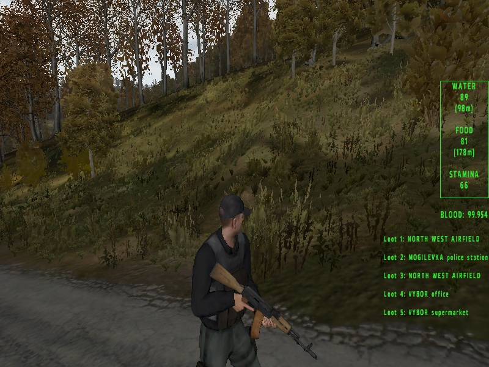
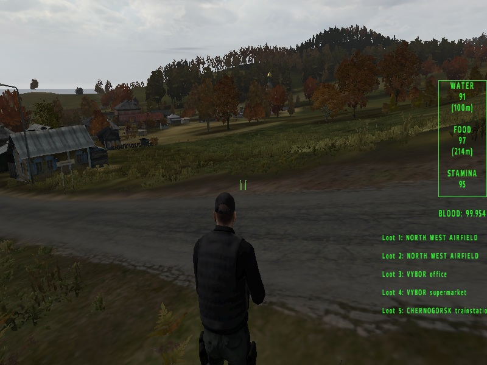
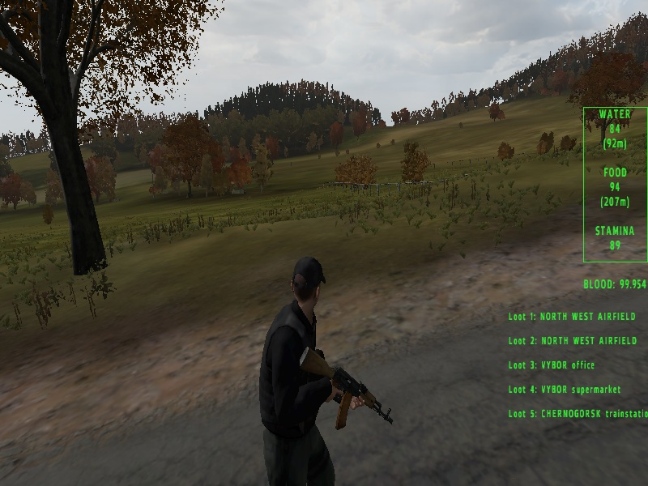
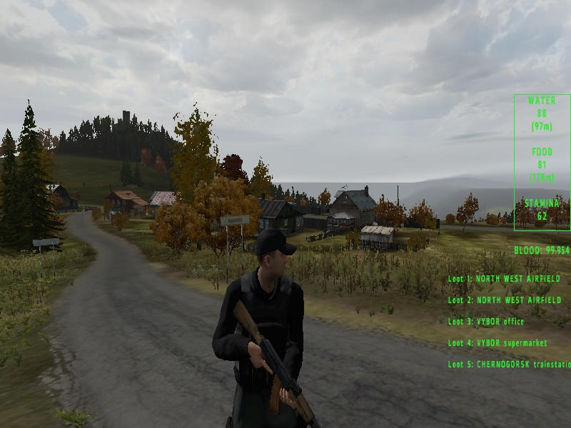
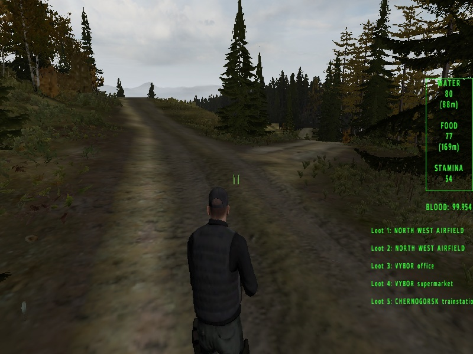
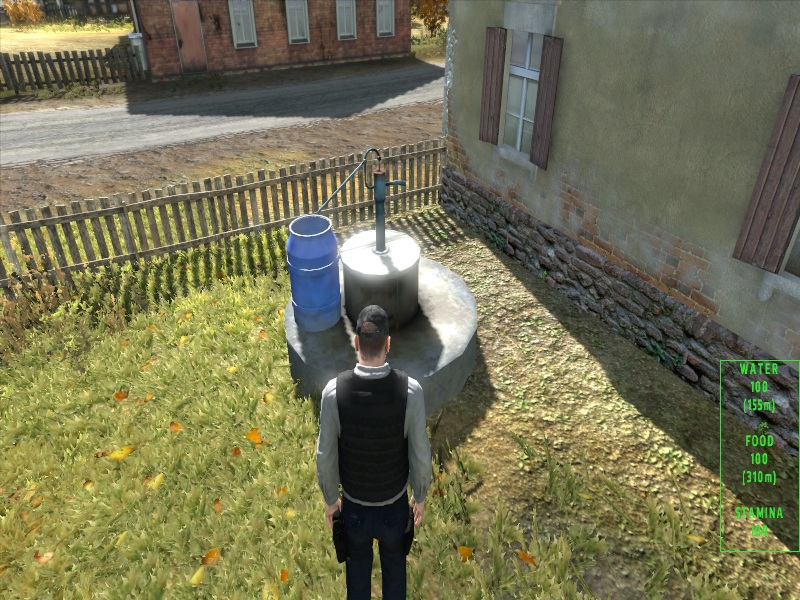
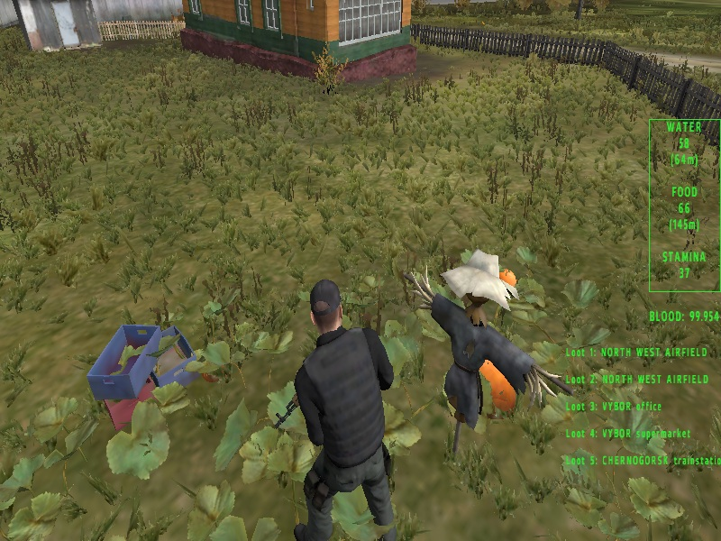

game
Original ArmA 2 Chernarus experience
225 km² of open terrain — forests, roads, cities and villages







Nothing has been added on top — just what was already there is now usable.
You need water, food and stamina.
Drinking from pumps, wells and fountains already present on the map.
Food comes directly from the world — like pumpkins in fields.
Weapons are still there — just like in ArmA 2.
1. Install the game
Install ArmA 2: Operation Arrowhead on Steam
(this version should include all expansions)
2. Start the game
Launch ArmA 2: Operation Arrowhead
Select "Launch without BattlEye" → PLAY
3. Enable expansions
Operation Arrowhead
British Armed Forces
Private Military Company
Army of the Czech Republic
If changed, restart the game
4. Join server
Multiplayer → Server Browser
HOST filter: thirst
5. Connect
Find: The Thirst game → Join
Water comes from pumps, wells and fountains.
Food can be found in the world, such as pumpkins.
Stamina depends on how you move.
Walking allows longer travel.
Running drains you faster.
Version 0.1
• Water sources active
• Pumpkins added
• Basic stamina system